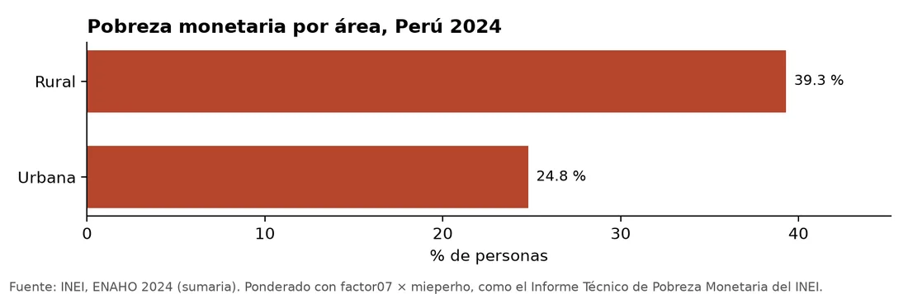

Pregunta
¿Se pueden reproducir las cifras oficiales de pobreza monetaria del Perú con un pipeline automatizado y reproducible?
Datos y método
Microdatos de la ENAHO 2024 (INEI). Construí cuatro pasos encadenados con Claude Code: descarga, limpieza, gráficos y mapa por departamento.
Resultado
Las cifras coinciden con el Informe Técnico del INEI: 27,6 % de pobreza monetaria nacional.
- Pobreza rural de 39,3 % frente a 24,8 % urbana.
- Pobreza extrema de 5,5 %; Cajamarca llega a 45,0 % e Ica a 6,0 %.

